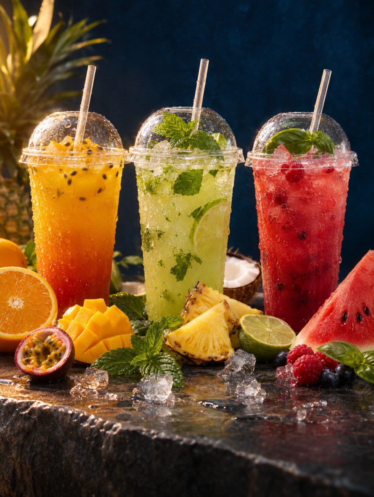
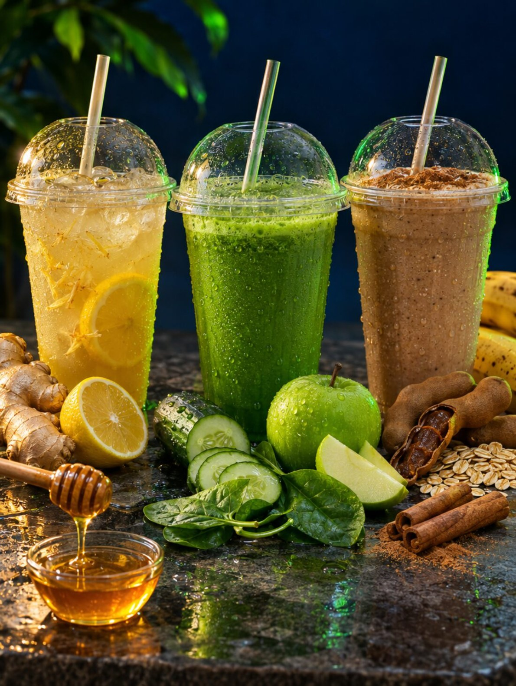
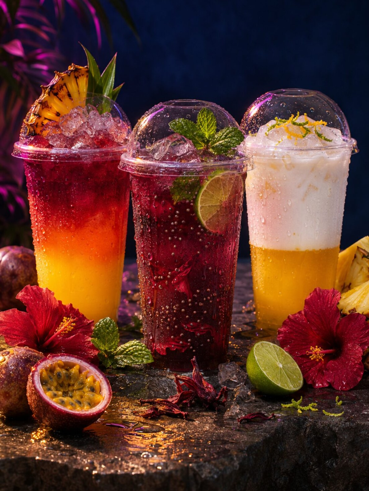
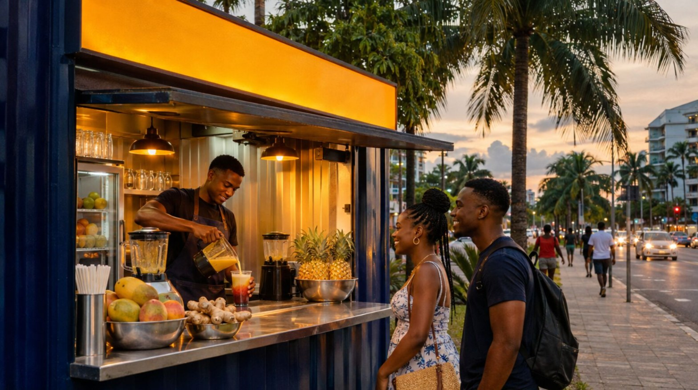
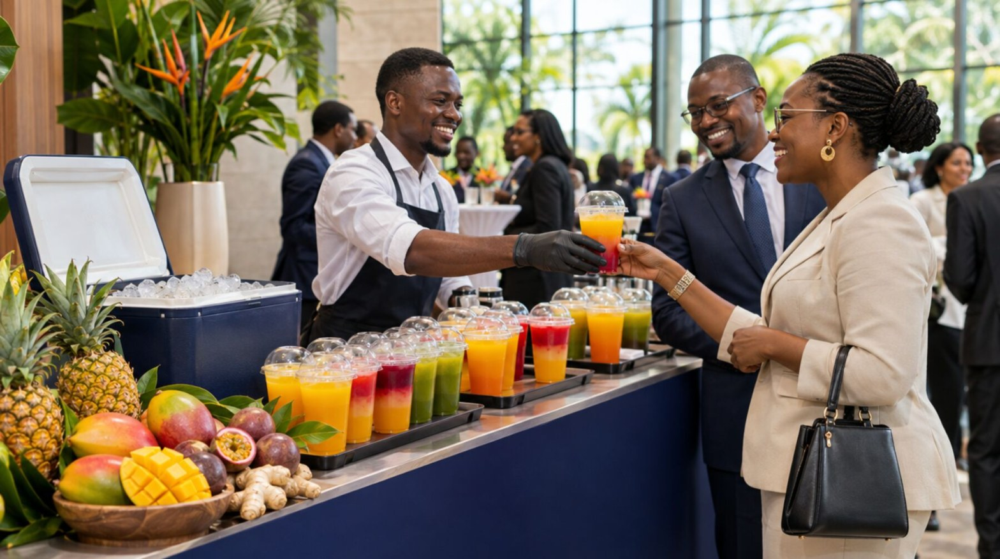

Kiosque de jus frais · Libreville
L'énergie pure,
le style en plus.
Des boissons fraîches 100 % sans alcool, faites à la minute avec les fruits du Gabon. Dès 1 500 FCFA.
Kiosque de jus frais · Libreville
Des boissons fraîches 100 % sans alcool, faites à la minute avec les fruits du Gabon. Dès 1 500 FCFA.
Mangue, ananas, corossol, tamarin, fruit de la passion, gingembre. Achetés au marché la veille, jamais plus tôt.
Chaque boisson est préparée devant vous, du pressage au dégradé. Rien n'est fait à l'avance.
La carte
Une carte courte, maîtrisée à la perfection. Chaque recette porte le nom d'un lieu ou d'un symbole du Gabon : c'est une carte du pays qui se boit.

La porte d'entrée de la carte. Des fruits frais pressés, de la couleur, et rien d'autre.
Orange pressée, mangue, fruit de la passionLe best-seller du matin : vitamines, couleur, réveil.
Ananas frais, menthe pilée, citron vert, eau de cocoHydratation et fraîcheur, le fleuve dans un gobelet.
Pastèque, fruits rouges de saison, citron vert, basilicLéger et désaltérant, pour l'après-midi en terrasse.

Les boosters naturels du terroir. Aucun sucre ajouté : la douceur vient des fruits et du miel.
Gingembre frais pressé, citron, miel pur, pointe de piment douxLe boost signature : énergie immédiate.
Concombre, pomme verte, épinard, gingembre, touche de spirulineRécupération et vitalité, le chouchou des sportifs.
Tamarin, banane, flocons d'avoine, miel, cannelleÉnergie longue durée, avant l'examen ou avant le match.

Des créations en couches et en dégradés, pensées pour l'appareil photo autant que pour le palais.
Dégradé mangue, fruit de la passion et bissap, glace pilée, ananas rôtiLe coucher de soleil sur la plage la plus célèbre du pays.
Bissap infusé à la menthe, citron vert, gingembre, perles de chiaPourpre nuit constellé, l'énergie de la capitale après 19 heures.
Lait de coco, ananas pressé, corossol, zeste d'agrume, en couchesBlanc sur or : la ligne qui coupe le pays en deux, dans un gobelet.
Le manifeste
Nous croyons que l'énergie n'a pas besoin d'alcool. Que le style n'a pas besoin d'importation. Nous sommes de Libreville, pour Libreville.
Fraîcheur radicale
Aucun jus préparé à l'avance. Ce qui n'est pas frais n'est pas servi.
Fierté du terroir
Chaque recette porte le nom d'un lieu du Gabon. La carte raconte le pays.
Vitesse respectueuse
Servi en moins de deux minutes, jamais au détriment du geste propre.
Transparence totale
Prix affichés, recettes visibles, préparation devant vous.
Au plus près des bureaux, des campus et des salles de sport. Passez, commandez, repartez avec votre énergie en moins de deux minutes.

Boulevard Triomphal, côté immeubles de bureaux
Le kiosque principal, au cœur du quartier d'affaires.
Quartier Louis, près du carrefour
Le rendez-vous de fin de journée et du samedi.
Angondjé, à côté des terrains de sport
Le point Energy Blends après l'entraînement.
Entreprises et événements
Séminaires, salons, mariages, hôtels, salles de sport : nous apportons les fruits, la glace et le geste. Vous recevez un devis clair sous 24 heures.

Assortiments de 10 à 50 boissons livrés en glacières, gobelets personnalisables au nom de l'événement. Sur devis.
Un stand avec préparation en direct pour vos salons, mariages, compétitions sportives et marchés nocturnes. Forfait demi-journée ou journée.
Approvisionnement quotidien des petits-déjeuners et des bars de piscine. Co-branding possible. Grille dégressive selon volume.
Le Green Power en post-entraînement, avec une présence hebdomadaire dans votre salle. Partenariat de visibilité.
La carte de fidélité Urban Juice est numérique et se gère sur WhatsApp. Demandez la vôtre au kiosque dès votre première commande.